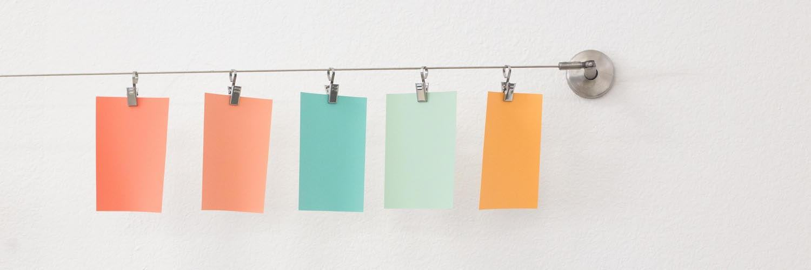
Project management apps turn ambitious ideas into workable plans. They put lists, tasks and files into a centralized hub, so your team can collaborate. They’re intricate, all-encompassing solutions.
And that power can make them feel, well, complicated.
Every task includes its own micro-tasks—the nitty-gritty details that help your goals move forward. It’s like each task is a project of its own, begging for its own project management system.
Sometimes the individual tasks are as important as the overall project—especially when the project is, perhaps, an ongoing project like “Make more car parts” or “Write blog posts”. When the job’s never done, the system for completing each task is most important.
That’s why Toyota invented the “kanban” system, and introduced it to their factory teams more than 60 years ago: to help make sure each part was made with the same level of care at every step. For that, kanban focuses on status instead of due dates. Each task moves through standardized project stages so teams can track what’s in-progress at a glance, and identify show-stopping bottlenecks.
It helped Toyota make parts that were consistently great, and ensured the parts were finished exactly when they were most needed in their factories. And today, kanban helps teams manage editorial workflows, push code through development sprints, streamline hiring processes, and much more.
It’s the project management system you need to visualize your work. Here are 8 of the best ways you can implement kanban into your team, along with 8 great apps to pick from.
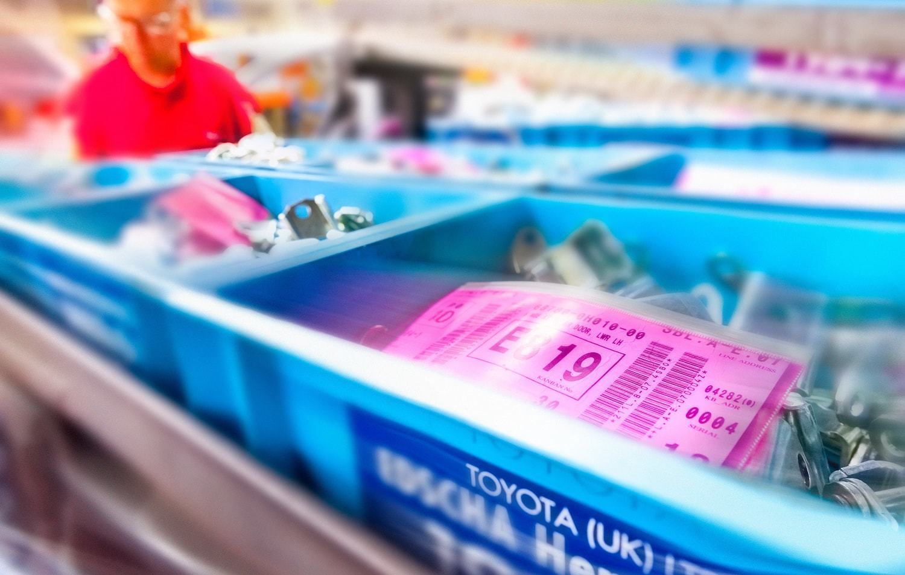
Supermarket shelves. Car factory floors. Software development schedules. These unrelated tasks played a role in the creation of kanban, and for our purposes, kanban boards.
As it turns out, almost every job has a process, steps that each task must go through. Peanut butter jars go from a supplier to a stockroom to shelves; parts go from raw metal to a finished product on a factory floor; software bugs go from a feature request to raw code to a finished addition to the product. Kanban fits them all.
So what exactly is a kanban board, and how would you use one to visualize your projects and get tasks done more efficiently?
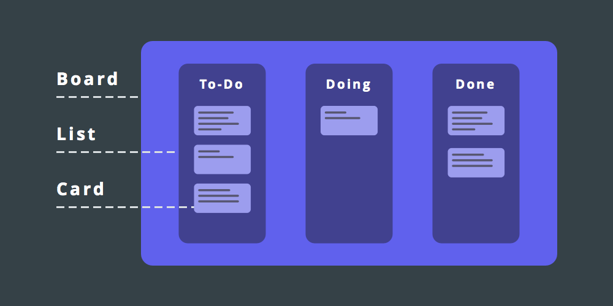
Whether offline in a 1950’s Toyota factory or online in today’s latest apps, kanban has three basic elements: board, list and card.
With these elements as a foundation, the possibilities for how you employ a kanban board are as limitless as the ways you could use a spreadsheet. Create two boards, for example, to manage your company’s next product launch. On the first board, your development team tracks launch progress by moving cards from list to list—To-Do, Doing and Done. On the second board, your marketing team categorizes planned launch activities with columns like Co-Marketing Ideas, Press Pitches and Internal Promotion.
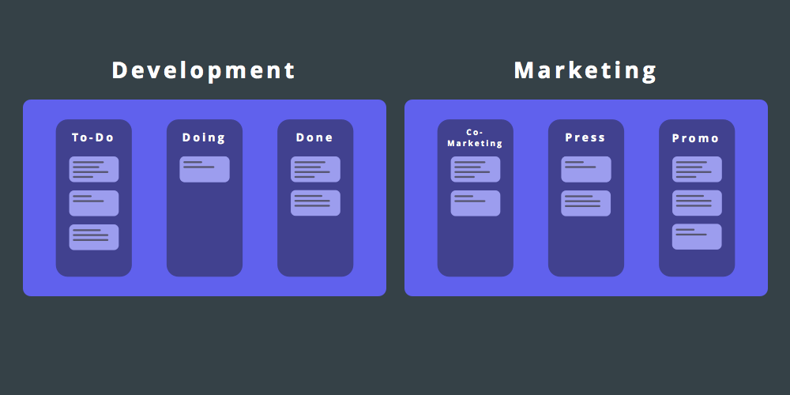
That’s only two of the many ways you could use a kanban board to organize your processes. We’ll get to more. But first, let’s look at the core kanban ideas and features to help you go from cards and lists to an organized workflow.
In a typical project management app, you’d list tasks, add comments or notes with more info, and check tasks off as they’re completed. Things work a bit different in a kanban board app.
Here are the eight most common features you’ll find in a kanban board app—from the basics that are similar to paper-on-a-board physical kanban boards, to those that could only be possible in an app. The names and specifics of these features vary across apps—as you’ll notice in the screenshots which come from a variety of apps—but their core functionality remains the same.
Note: Each of the graphics in this section were originally animations in the web version of this book. To view the animated versions, be sure to check out Chapter 4 of The Ultimate Guide to Project Management on the Zapier Learning Center.
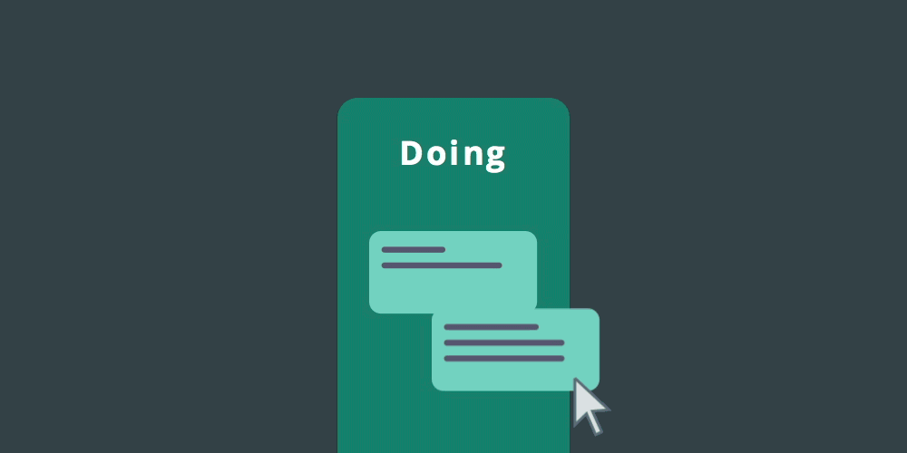
Moving cards between columns is vital to making the most of a kanban board. It’s the one feature you’ll use most—you’ll likely move cards more than you even make new ones. In most kanban board apps, you can change the placement of a card at any time—move it within a list (up or down) or move it from list to list. To do so, put your cursor over the card, then click, hold and move the card to the new location.
If you want to move or copy the card from one board to another, you’ll typically find that option within the card’s settings. And in some kanban board apps like LeanKit, you can change the layout of your columns, so you might be moving a card to a lower or higher column. Experiment and see where you can drag a card—you can’t break anything.
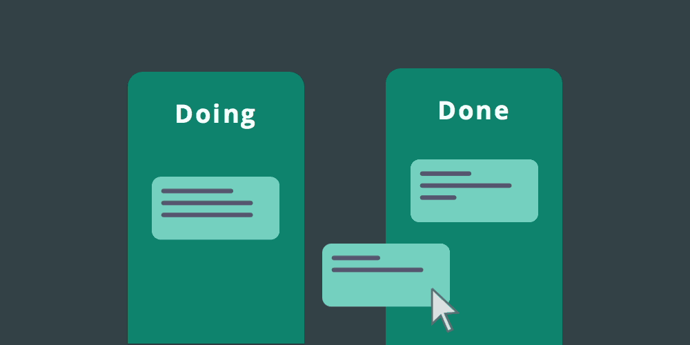
With all this movement, you’ll sometimes find yourself needing to look back at the path the card took. To do this, locate the card’s activity stream, likely on the card “back.”
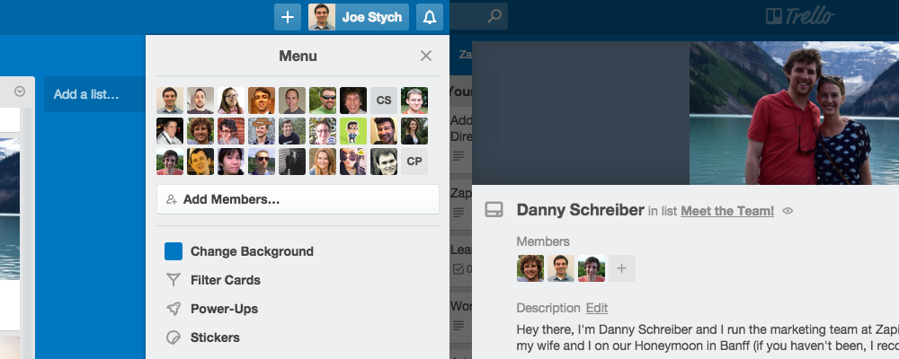
Like you’d expect from a traditional project management app, kanban board tools let you invite teammates, clients and others to collaborate on a project. This happens on two levels: board and card.
Each board has its own settings, including the ability to invite members. In Trello, for instance, you’re able to invite any Trello user to a board. Or, if you’re part of an organization (such as “Zapier”), there’s a quick-list of fellow organization members that you can choose from. Otherwise, you can typically enter someone’s email address to invite them to join a board for the first time.
When you add people to a board, they’ll be able to add cards, move cards, leave comments on cards, edit cards and more. They’ll also see the activity stream related to that board, so they can keep up with the project even if they’re not a direct part of it.
Cards have members or assigned users, too, but with a different purpose: you’ll add a member to the card (including yourself) to take or split ownership of the task. When you do so, you’ll start to get notifications for activities related to that card. For example, if a board member leaves a comment on the card, the kanban board app lets you know when you’re assigned to that card.
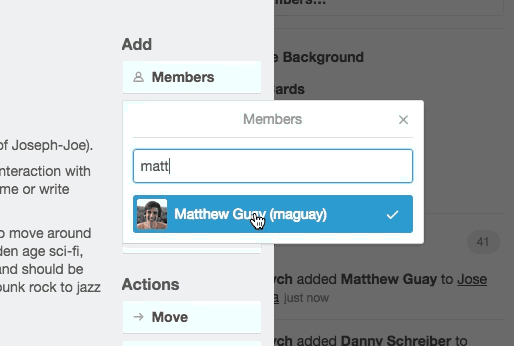
If you’re not directly responsible for the activity described on a card, but you want to keep tabs on it, another option of many kanban board tools is to “subscribe” to the card. Subscribing to a card ensures you’re notified of new card activity, just as if you were assigned to it. And in the same vein, if one of your cards are too noisy, you can unsubscribe from notifications to keep your inbox clear.
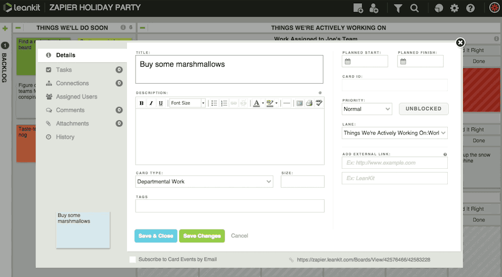
Here’s where a virtual kanban board is exponentially more valuable than a physical one: endless comments. Offline, it you’re using a Post-it Note to track a task, you’ll quickly run out of space to scribble things you need to remember. Online, a kanban card gives you limitless space to make note of what’s needed.
Most kanban tools include a description field on each card, where you can add notes and attach related files. There’s also usually an area to hold discussions with your teammates. And when you’re writing up a description or leaving a comment, you’re able to mention other members by @-mentioning the individual, like you would on Twitter.
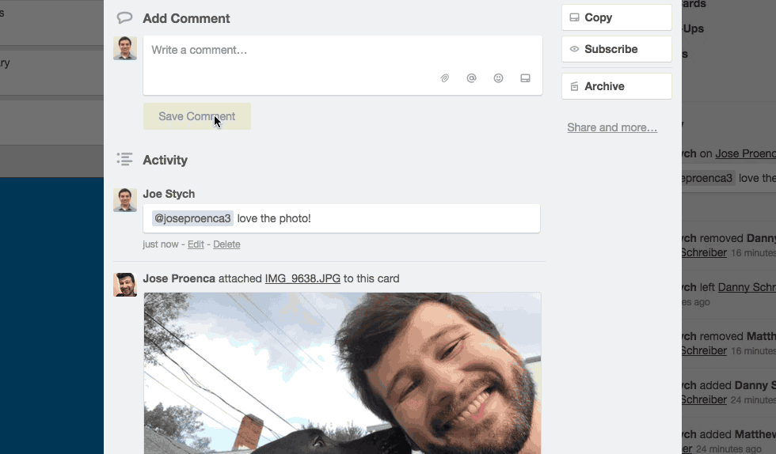
To access these two features, you’ll need to tap into what some apps call the “card back”—look for a link to this additional set of features on the card itself, or just click the card and it’ll likely open automatically.
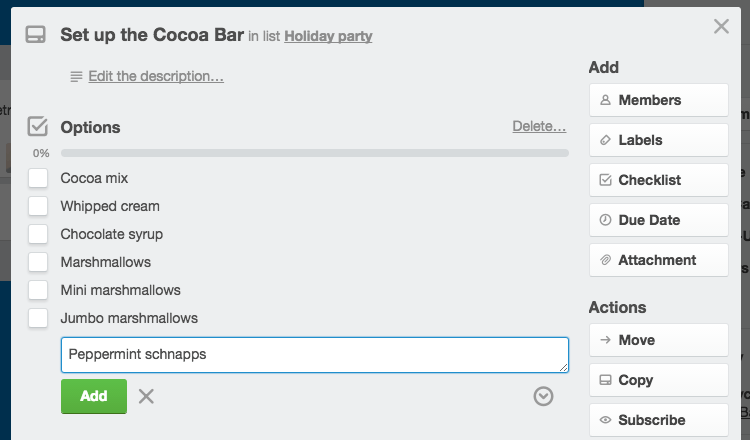
Your work is rarely a simple process, which is why tasks need checklists of their own. That’s what you’ll get with a kanban tool—each card can have one or more checklists or task lists. For example, a card on your “Press Outreach” kanban board might be titled “TechCrunch,” and contain the following checklist:
[ ] Initial pitch email [ ] Follow up with more information [ ] Media assets delivered [ ] Coverage confirmed [ ] Coverage published
Depending on your kanban board tool, the card cover might show a completed checklist percentage that goes up as you check off tasks, making it easy to see where you are in a process.
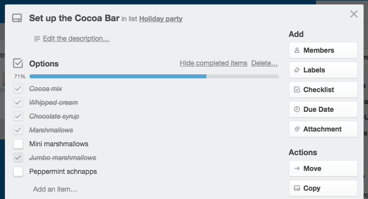
Like descriptions and comments, you can @-mention fellow board members in a checklist, too. At Zapier, we use checklists with mentions to assign roles in our editorial workflow. Every card has an “Editing” checklist with three tasks—micro edits, macro edits and newsletter copy—each assigned with an @-mention.
Related Learn more about our editorial process and how we turn blog posts into books at Zapier.
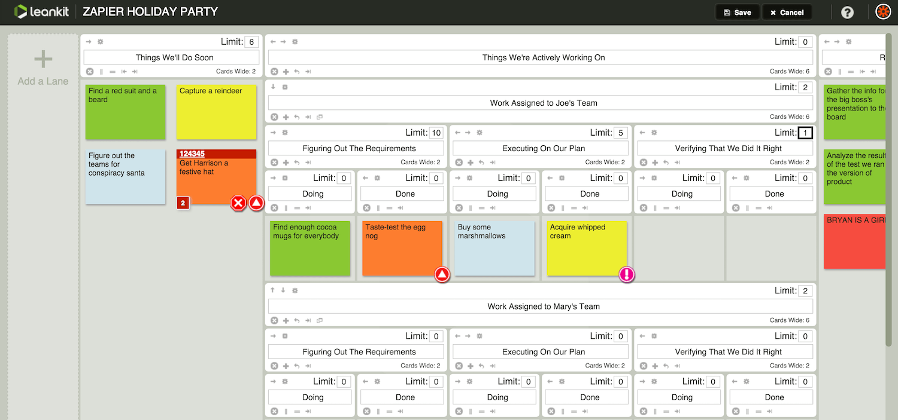
Processes can get overwhelming when there’s too many tasks in a list at once. That’s why some kanban apps let you restrict the amount of tasks you can include in a list with work in progress limits, or WIP (pronounced whip) limits for short. These constraints are applied to a column limiting the number of cards in that column.
For example, if I know that our blog writers at Zapier can only handle writing three posts per week, I would add a WIP limit of three cards to the column titled “Writing.” You’ll usually find WIP limit tools in the layout editor for your kanban board, and will just enter a number for the top number of cards you want in a list. If you add too many, the kanban tool will warn you there’s already too many things to do—a quick way to know when you should work on other tasks.
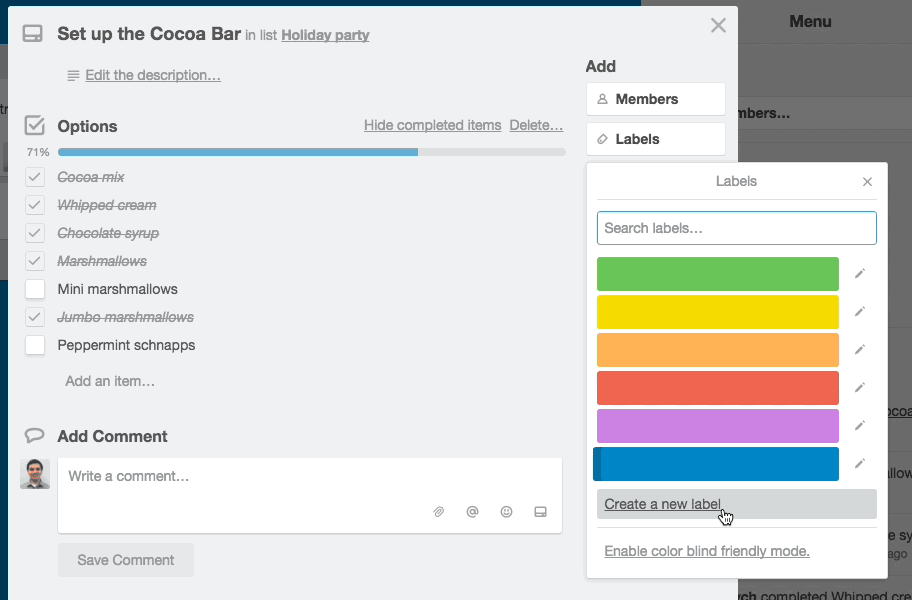
Let’s get back to full-picture—the board view—and focus on another must-know feature: labels. Labels, also called tags, add another level of organization to cards in a list or board. If a card has a specific state that isn’t covered by its position in a list, a label can be handy.
Returning to our editorial calendar setup, for example, we use labels at Zapier to denote if a post is written in-house, by a freelancer or by a guest. You could also use labels to note tasks that need your design or development team’s help, perhaps, or to mark tasks’ difficulty. You could even add multiple tags, to note when tasks need both development and design help, say.
Labels or tags aren’t applied across all of your boards. Instead, they’re specific to each board. You can customize each board’s label colors and names so they fit that board’s workflow perfectly.
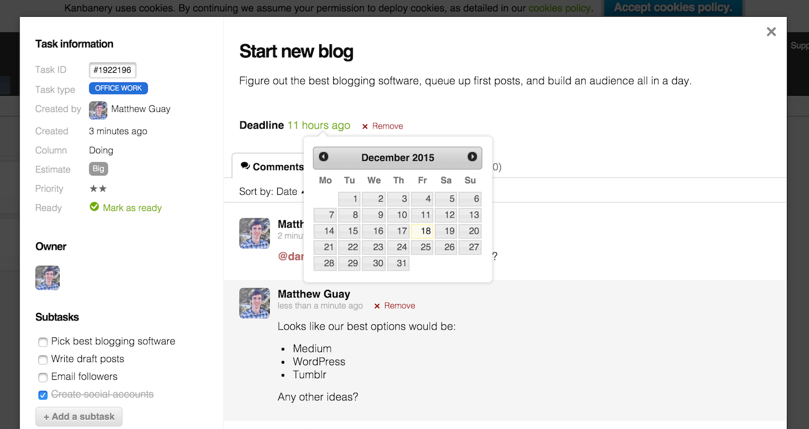
Tasks without due dates often don’t get done. So don’t forget to set deadlines for your kanban cards. Just click the due date button—typically on a card’s back or under a clock icon—and select the date when the task should be finished.
Most apps offer due date notifications, too. To get a reminder, you’ll either need to be a member of the card or “subscribe” to the card—a feature available in most kanban tool apps. Then, your kanban tool will remind you when a task is coming up or overdue.
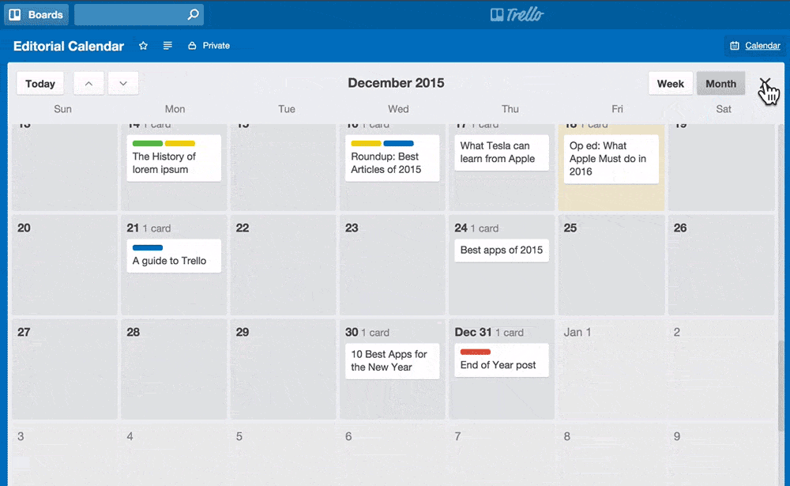
Beyond the default “board” view of a kanban board tool, many kanban apps let you toggle a calendar view. This quick switch—in Trello, for example, it’s at the click of a button—makes it easy to visualize upcoming development deadlines, a publishing scheduling or product delivery dates.
And just like the board view, the calendar view lets you add, move and edit cards, too. Need to reschedule an overdue task? Just drag it to the new due date on your calendar.
Need a tool to make your kanban boards? Here are eight of the best, each of which are easy to use but also include unique features to help your team be productive.
See the full table along with full app reviews on the Zapier Learning Center.
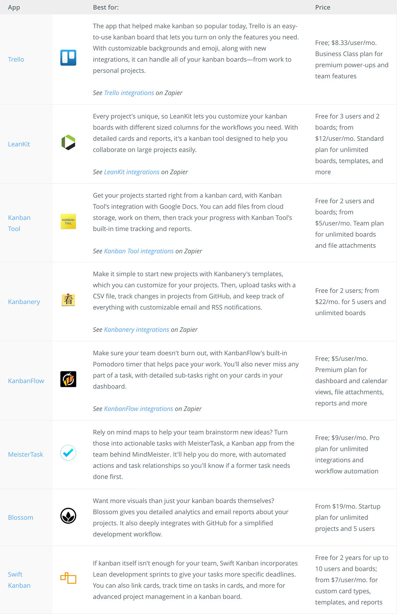
There’s more, too. You’ll find kanban board tools inside many apps today—or as companion add-ons you can easily install. Visual Studio Online includes a kanban view for your work items, while tools like Waffle.io can turn your GitHub issues into a kanban board automatically. Productivity tools, including task managers like Flow and project managers like Zoho Project, also often include kanban views as another way to sort your tasks.
Or, for simpler projects, you might not even need an app. Instead, you could repurpose a whiteboard as a makeshift kanban board. Draw your own columns, use post-it notes for your cards, and you’ll have a quick way to visualize your projects and start pushing each task towards the last column for completion.
Kanban boards were popularized first by factories and later by software development teams. Thanks to their flexibility, kanban apps can now be found everywhere—from the boardroom to your home office. Here are six of the many unique ways kanban boards can be used to get more done.
Collaborating in a kanban board seems like a given, but it’s not a requirement. A kanban tool can be used all on your own to manage your personal tasks. The simplest way to get started is to create the standard lists: To-Do, Doing and Done. Or add a backlog list, for when a task or work item doesn’t fit into one of the three categories. That’s how Pocket founder Nate Weiner uses Trello.
“I have a board that I call The Hopper, (with lists) Today, Tomorrow and This Week,” Weiner says. Before using the personal kanban method, the Pocket CEO relied on his email inbox as a checklist. Finding that a “terrible place to put tasks,” he tried several to-do apps, but none of them stuck.
That is, until he made a kanban board. “Anytime I come up with something, I just hop into the app, drop it in The Hopper and then at the beginning and end of the day, I can recycle these things and move them around as need be,” says Weiner.
You can add automation to Weiner’s process by relying on Zapier to create a Trello card when you star or label a Gmail email, or file away an Office 365 email.
Moreover, if you have a routine task you need to complete, rather than re-adding it daily, weekly or month, rely on Zapier.
For more on making personal kanban boards, read Alan Henry’s Lifehacker post, “Productivity 101: How to Use Personal Kanban to Visualize Your Work.”
There’s apps to help manage your editorial calendar, but rather than adding more software to your workflow, consider using a kanban board to manage content. At Zapier, for example, we use a Trello board to keep our publishing pipeline flowing.
Our “Editorial Calendar” board has six lists—To Write/Assign, Writing, Editing, Ready, Publishing and Promoting—and each card represents a piece of content. The member of the card is the content’s author, unless the post has been assigned to a freelancer, in which case the member is the freelancer’s contact and the card is given a green label to note it’s a “freelancer” post. When a card moves into the “Editing” list, we add a checklist with three tasks—Macro Edits, Micro Edits and Newsletter Copy—@-mentioning a team member beside each.
Before implementing the kanban workflow at Zapier, we didn’t plan posts more than a week out, and were always scrambling to get content published on time. The Trello board, with its checklist, card members and due dates, has helped changed the way we work at Zapier.
And once an article has been published, we use a Zapier-powered Trello to Slack integration to let the team know there’s a new post on our blog automatically whenever a card’s moved into our Promoting list.
Or, if you’re using another kanban board app, here are some Zapier automations to help your team know as things move through your editorial calendar.
For a tutorial on using a kanban board for your content planning, read “How to Create an Editorial Calendar Using Trello” on the BlueGlass digital marketing blog, or “Moved To Published: Using Trello As An Editorial Calendar” on Trello’s blog. For a breakdown of how a kanban board app differs from an editorial calendar tool, see WPCurve’s post, “Trello vs CoSchedule: Editorial calendar review for content marketers.”
Similarly, Robby Macdonell, vice president of product development at productivity tool RescueTime, relies on a kanban board to keep a repository of future blog post ideas. He employs just two list: “Possibilities” and “Done.”
“I’m constantly seeing articles or blog posts about working smarter or happier, and many of them have ideas that I’d like for us to explore further on the RescueTime blog,” Macdonell says.
“I usually see these articles in passing, don’t have enough time to fully digest them, and when it comes time to meet with our content team, I’ve completely forgotten about them,” he says. “Now, I just save the article with Pocket, give it a tag, and it automatically ends up in the ‘Ideas for Future Posts’ board.”
You could use Zapier integrations to create kanban cards from your company mentions, RSS feed posts, emailed-in idea suggestions, and much more, so you’ll always have ideas to start with—and then, you could get them published with your Kanban-powered editorial calendar.
Customer support apps often include forum tools, where users can suggest and vote on new features, functionality or add-ons. The team behind Front, a shared inbox app, knew the importance of that customer interaction and wanted to offer their users something like this. Rather than fiddling with a new tool, though, they made a modification to the Trello board where they were privately storing user requests—they made it public.
“It was a big decision to make and we put a lot of thought into it,” Mathilde Collin, Front CEO, writes on the company blog, “but once we opted for it, it literally took us 2 minutes to launch it.”
On top of giving visibility to all, they added a Trello feature to allow for public votes on individual cards to gather input from users.
“The public roadmap has already helped us collect valuable feedback,” Collin writes. “For example, the native iPhone app was far more urgent than we anticipated, and 4 times more requested than the Android app: we instantly added it to our next product cycle.”
Front’s not alone in using a kanban board for a public roadmap. Trello itself does the same, and they offer a guide to taking your company’s plans public, too: “Going Public! Roadmapping With A Public Trello Board.”
When it comes to filling up your own roadmap with potential ideas, Zapier can help by creating cards in your kanban app from starred Slack messages, new Evernote notes in a specific notebook, new Asana projects and more.
At some point, you’ll find you need a CRM app, a customer relationship management system that keeps you and your team on top of your sales pipeline. Until that time comes, though, you can get much of the same features with a spreadsheet CRM or a contact-centric kanban board. It’s the latter that entrepreneur Grégoire Gilbert found to work best early on for his team.
“There’s a lot of CRM and sales pipeline solutions out there. From platforms aiming at freelancers, to SaaS targeting sales teams. Most of them look good and could have probably worked for our tiny team,” say Gilbert. “Although, being a pretty convinced Trello user already, I decided to give it a try for managing my sales pipeline.”
He set up his company’s kanban board with a list for each stage, from “Contacted Us” to “Won,” “Contact again later” or “Lost.” He then used labels to mark if a prospect needed to be contacted or there was another action that needed to take place. When the contact reached the list called “Meeting arranged,” Gilbert employed the card’s checklist to note the tasks he needed to complete in order to prepare for the in-person sale, and added the in-person meeting’s date as the card’s due date.
Gilbert’s system wasn’t set in stone. That was part of the plus of using a kanban board tool: it was customizable to his team’s evolving workflow. And he’s not only one he’s used Trello as a simple CRM—EntreLeverage, an administrative support agency, for example, has heralded the system, too.
If you’re considering setting up a kanban board app for a sales pipeline, rely on Zapier when it the time comes to start pulling in leads. Zapier can turn your emails, contacts, proposals and more into kanban cards, or it could notify you when cards—ahem, contacts—reach a certain stage.
You’re hiring for one position, then two, then four. Sorting through applicants in your inbox is manageable when you’re just starting to hire, but before long you’ll need an applicant tracking system—an app that organizes candidates, allows you to assign team members to hiring tasks and keeps applicant information easily accessible. There’s well-built software for this task, such as Workable or Breezy, but a kanban board with some Zapier automations can also be a great solution.
To get started, set up a hiring inbox with your Google Apps account, and then use Zapier to create cards from each new email received. You can set up the integration to use the email subject as the card’s title, include the attached resume as a card attachment, and pull out the email body, contact info and any other details and add it as the card’s description. Then, you can use columns to note each part of the hiring process. It’s not a full-fledged applicant tracking system, but it’s bounds better than an overflowing inbox.
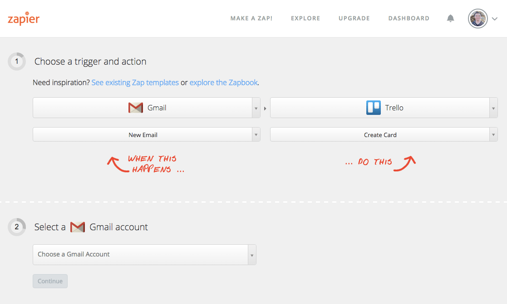
It’s also how a number of teams are already processing their applicants. “Back in the day we found it very stressful to keep track of our inbound applications,” says Michael Börner of digital agency Edenspiekermann. “Making decisions on applications is decentralized at Edenspiekermann, and we needed a way to send the applications to our colleagues to get proper feedback.”
“Now, we generate a Trello board for each job posting, and define a Zap that way,” says Börner. “We are sending the inbound application message to an email address that splits the mail with its attachments and adds it as a card on the corresponding board. Further, the Zap assigns the right people to the cards, and from there, we take it in Trello. This way we save time and get a well-handled process.”
For a step-by-step guide to setting up Trello as an applicant tracking system, read entrepreneur Eric Sui’s tutorial, “How You Can Use Trello to Organize Your Hiring Process.”
The team behind email marketing app Emma relies on Leankit to monitor progress of its team’s biggest goals. Jessica Crabb, a product designer at Pivotal Labs, turns to Trello to schedule and record user research. Brian Cervino, a Trello team member, uses his company’s product to plan his meals—one of dozens of kanban board uses highlighted by the Trello team.
Kanban board apps can be called on for projects big and small, individual and team efforts, one-time or ongoing work. These tools offer much of the same functionality of a traditional project management app—or a CRM, applicant tracking system or editorial calendar tool. You’ll just need time to make it your own.
Create boards for your next projects, add lists and labels that fit your workflow, bring in all of your tasks, and give it a try. Customize until everything feels just right. It might take a bit of time, but once you have your board title, list names and card formats in place, you’ll be ready to tackle your first task. And before you know it, you’ll be making more kanban boards for your next tasks.
Kanban boards aren’t the only way to manage projects. There’s a world of project management software, with tools of all shapes and sizes that can help you plan projects, assign tasks, schedule release dates, and keep track of everything in one place. Some are simple, with just team-focused to-dos. Others do everything, merging chat and invoicing with projects and documentation, for a one-stop-project-shop.
In the next chapter, we’ll look at the 50 best project management apps, with enough different tools to fit almost every possible project need—and then some.
Enjoy this chapter? Read it online or share it at https://zapier.com/learn/ultimate-guide-to-project-management/kanban-board/.
Written by Zapier Marketer Danny Schreiber.
Image Credits: Toyota factory photo by Toyota UK via Flickr.